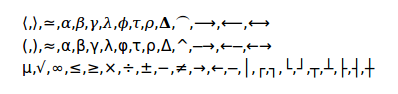
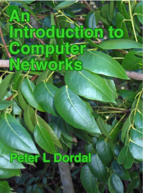

Preface¶
“No man but a blockhead ever wrote, except for money.” - Samuel Johnson
The textbook world is changing. On the one hand, open source software and creative-commons licensing have been great successes; on the other hand, unauthorized PDFs of popular textbooks are widely available, and it is time to consider flowing with rather than fighting the tide. Hence this open-access textbook, released for free under the Creative Commons license described below. Mene, mene, tekel pharsin.
Perhaps the last straw, for me, was patent 8195571 for a roundabout method to force students to purchase textbooks. (A simpler strategy might be to include the price of the book in the course.) At some point, faculty have to be advocates for their students rather than, well, Hirudinea.
This is not to say that I have anything against for-profit publishing. It is just that this particular book does not – and will not – belong to that category; the online edition will always be free. In this it is in good company: there is Wikipedia, there is a steadily increasing number of other open online textbooks out there, and there is the entire open-source world. Although the open-source-software and open-textbook models are not completely parallel, they are similar enough.
The market inefficiencies of traditional publishing are sobering: the return to authors of advanced textbooks is usually modest, while the lost-opportunity costs to users due to lack of access can be quite substantial. (None of this is meant to imply there will never be a print edition; when I started this project it seemed inconceivable that a print publisher would ever agree to having the online edition remain free, but times are changing.)
The book is updated multiple times per year (Recent Changes). This is another feature that paper publishing can’t touch, though the rate has slowed down in recent years.
The official book website is intronetworks.cs.luc.edu. The book is available there as online html, as a zipped archive of html files, in .pdf format, and in other formats as may prove useful.
Note that there are three html variants: the original, a version using a more universally available set of unicode characters, and a version better suited to smaller screen. In an ideal world, my Javascript would figure out which version to serve to your browser automatically; in our real world, it took me three years to get the html quick-search facility to work again after I broke it with the collapsible sidebar. See Technical considerations below for more information.
Second Edition¶
The second edition is finally here! Mainly this involved breaking up the longer chapters, partly to make scrolling less fussy (at least on some devices), partly to restore the sense of accomplishment at finishing a chapter, and partly so the collabsible contents sidebar fits in the viewport of most devices, making sidebar scrolling unnecessary.
Division of the overlong chapters in many cases followed a logical divide: thus the IPv4 chapter became the basic IPv4 chapter and the IPv4 companion protocols, the Ethernet chapter became a chapter on basic Ethernet and a chapter on more advanced features, and the security chapter divided naturally into public-key encryption for the second half, and everything else in the first half.
In other cases, the division was less natural; the IPv6 chapters comes to mind here as the companion protocols Neighbor Discovery, DHCPv6 and SLAAC ended up in the same chapter as the IPv6 core protocol.
Throughout the eight-year lifetime of the first edition, I never changed any exercise numbers; new exercises that needed to be grouped with older exercises were always inserted with floating-point numbering, eg 4.7. For a book that might get updated in the middle of the semester, that is essential. However, the second edition involved splitting chapters and dividing the exercises appropriately, and I realized that the time for renumbering was at hand. To make life easier for instructors (including me) who have assignments based on the old numbering, there is a handy conversion table here: Exercise-Numbering Conversion Tables.
After much demand, I have finally accepted that I need to create a solutions manual for instructors, covering at least a majority of the exercises. It is in progress; instructors should contact me if interested.
The second edition html version became available July 31, 2020.
Licensing¶
This text is released under the Creative Commons license Attribution-NonCommercial-NoDerivs. This text is like a conventional book, in other words, except that it is free. You may copy the work and distribute it to others for any noncommercial use (and for some commercial uses; see below), but all reuse requires attribution.
The Creative Commons license does not precisely spell out what constitutes “noncommercial” use. The author considers any sale of printed copies of this book, even by a non-profit organization and even if the price just covers expenses, to be commercial use. Personal printing, and free distribution of printed selections, do qualify as noncommercial.
Starting with Edition 1.9.16, commercial use is also explicitly allowed, provided that printed copies are not distributed. In other words, the text is also released under the terms of the Creative Commons license Attribution-NoDerivs, amended to include a prohibition on the distribution of printed copies. The Creative Commons license summary linked to here states that “you are free to share – copy and redistribute the material in any medium or format for any purpose, even commercially”; this license is amended by this paragraph to limit “any medium” to non-printed media. Permissible commercial uses may include, but are not limited to, use in internal training programs, use in for-profit training and educational programs, sale of the work in the electronic formats available here, and installation throughout the Amazon EC2.
The Attribution clause of the Creative Commons licenses [Section 4, (b) for by-nd or (c) for by-nc-nd] requires that redistributors of the work provide “… (iii) to the extent reasonably practicable, the URI, if any, that Licensor specifies to be associated with the Work”. That URI is intronetworks.cs.luc.edu.
Under the Creative Commons licenses, creation of derivative works requires permission. It is not entirely clear, however, what would be considered a derivative work, beyond the traditional examples of abridgment and translation. Any supplemental materials like exams, labs, slides or coverage of additional topics would be new, independent works, and would require no permission. Even the inclusion in such supplements of modest amounts of material from this book would have a strong claim to Fair Use. In the open-source software world, the right to make derivative works is exercised whenever the software is modified, but it is hard to see how this applies to textbook supplements. The bottom line is that if you have a situation you’re concerned about in this regard, let me know and I’ll probably be happy to grant permission.
Some of the chapters contain source code; this is licensed under the Apache 2.0 license. Some code files (those which are derivative works) contain an official Apache license statement; others do not.
German Edition¶
I am delighted to announce that Rheinwerk Verlag has undertaken the translation of the book into German, with technical review by Dr Matthias Wübbeling of the University of Bonn, and has now published it as a commercial print edition. The book is available at www.rheinwerk-verlag.de/rechnernetze-das-umfassende-lehrbuch.
Classroom Use¶
This book is meant as a serious and more-or-less thorough text for an introductory college or graduate course in computer networks, carefully researched, with consistent notation and style, and complete with diagrams and exercises. I have also tried to rethink the explanations of many protocols and algorithms, with the goal of making them easier to understand. My intent is to create a text that covers to a reasonable extent why the Internet is the way it is, to avoid the endless dreary focus on TLA’s (Three-Letter Acronyms), and to remain not too mathematical. For the last, I have avoided calculus, linear algebra, and, for that matter, quadratic terms (though some inequalities do sneak in at times). That said, the book includes a large number of back-of-the-envelope calculations – in settings as concrete as I could make them – illustrating various networking concepts.
Overall, I tried to find a happy medium between practical matters and underlying principles. My goal has been to create a book that is useful to a broad audience, including those interested in network management, in high-performance networking, in software development, or just in how the Internet is put together.
One of the best ways to gain insight into why a certain design choice was made is to look at a few alternative implementations. To that end, this book includes coverage of some topics one may never encounter in practice, but which may be useful as points of comparison. These topics arguably include ATM (5.5 Asynchronous Transfer Mode: ATM), SCTP (18.15.2 SCTP) and even 10 Mbps Ethernet (2.1 10-Mbps Classic Ethernet).
The book can also be used as a networks supplement or companion to other resources for a variety of other courses that overlap to some greater or lesser degree with networking. At Loyola, this book has been used – sometimes coupled with a second textbook – in courses in computer security, network management, telecommunications, and even introduction-to-computing courses for non-majors. Another possibility is an alternative or nontraditional presentation of networking itself. It is when used in concert with other works, in particular, that this book’s being free is of marked advantage.
Finally, I hope the book may also be useful as a reference work. To this end, I have attempted to ensure that the indexing and cross-referencing is sufficient to support the drop-in reader. Similarly, obscure or specialized notation is kept to a minimum.
Much is sometimes made, in the world of networking textbooks, about top-down versus bottom-up sequencing. This book is not really either, although the chapters are mostly numbered in bottom-up fashion. Instead, the first chapter provides a relatively complete overview of the LAN, IP and transport network layers (along with a few other things), allowing subsequent chapters to refer to all network layers without forward reference, and, more importantly, allowing the chapters to be covered in a variety of different orders. As a practical matter, when I use this text to teach Loyola’s Introduction to Computer Networks course, I cover the IP/routing and TCP material more or less in parallel.
A distinctive feature of the book is the extensive coverage of TCP: TCP dynamics, newer versions of TCP such as TCP Cubic and BBR TCP, and chapters on using the ns-2 and ns-3 simulators and the Mininet emulator. This has its roots in a longstanding goal to find better ways to present competition and congestion in the classroom. Another feature is the detailed chapter on queuing disciplines.
One thing this book makes little attempt to cover in detail is the application layer; the token example included is SNMP. While SNMP actually makes a pretty good example of a self-contained application, my recommendation to instructors who wish to cover more familiar examples is to combine this text with the appropriate application documentation.
Although the book is continuously updated, I try very hard to ensure that all editions are classroom-compatible. To this end, section renumbering is avoided to the extent practical, and, except between different editions, existing exercises are never renumbered. New exercises are regularly inserted, but with fractional (floating point) numbers. Existing integral exercise numbers have been given a trailing .0, to reduce confusion between exercise 12.0, say, and 12.5.
For those interested in using the book for a “traditional” networks course, I with some trepidation offer the following set of core material. In solidarity with those who prefer alternatives to a bottom-up ordering, I emphasize that this represents a set and not a sequence.
- 1 An Overview of Networks
- Selected sections from 2 Ethernet Basics, particularly switched Ethernet
- Selected sections from 4.2 Wi-Fi
- Selected sections from 7 Packets
- 8 Abstract Sliding Windows
- 9 IP version 4 and/or 11 IPv6
- Selected sections from 13 Routing-Update Algorithms, probably including the distance-vector algorithm
- Selected sections from 14 Large-Scale IP Routing
- 16 UDP Transport
- 17 TCP Transport Basics
- 19 TCP Reno and Congestion Management
With some care in the topic-selection details, the above can be covered in one semester along with a survey of selected important network applications, or the basics of network programming, or the introductory configuration of switches and routers, or coverage of additional material from this book, or some other set of additional topics. Of course, non-traditional networks courses may focus on a quite different sets of topics.
Instructors who adopt this book in a course, as either a primary or a secondary text, are strongly encouraged to let me know, as this helps support continued work on the book. Below is a list of the institutions I’m aware of so far where the book has been adopted. Commercial publishers get this information from sales records, but that won’t work here; if you want to see your institution listed, contact me!
Augustana CollegeCalifornia State University, FresnoEastern Washington UniversityEdith Cowan University, AustraliaKennesaw State UniversityThe King’s University, Edmonton, CanadaLoyola University MarylandMiddle Tennessee State UniversityMurray State UniversityMuskingum UniversityOhio UniversitySaint Martin’s UniversitySeattle Pacific UniversitySUNY DelhiUniversity of Arkansas Community College at BatesvilleUniversity of California, Santa CruzUniversity of LuxembourgUniversity of Maryland, University CollegeUniversity of New Hampshire at ManchesterUniversity of North AlabamaUniversity of Texas at El PasoUniversity of the PeopleVillanova UniversityWellington Institute of Technology
Acknowledgments¶
I would like to thank the many Loyola students who have provided invaluable feedback on the text and the exercises. The result, I hope, is greater clarity for both. I would also like to thank the following people from outside Loyola who have contributed technical or editorial comments. I’ve included institutional affiliation if I could figure it out. If I’ve missed anyone, or their institution, please let me know.
| Anonymous | |
| Jose Alvarado | University of the People |
| Jim Davis | |
| Ben Erickson | |
| Eric Freudenthal | University of Texas at El Paso |
| David Garfield | |
| Jeff Harrang | |
| Emmanuel Lochin | Institut supérieur de l’aéronautique et de l’espace |
| Hamir Mahal | |
| Robert Michael | |
| Alisa Neeman | Muskingum University |
| Fred Nerk | |
| Natale Patriciello | Centre Tecnològic Telecomunicacions Catalunya |
| Donald Privitera | Kennesaw State University |
| Yves Rene Shema | British Columbia Institute of Technology |
| Charles Stimler | |
| Herman Torjussen | |
| J Wiedemann-Heinzelmann | |
| Alexander Wijesinha | Towson University |
| Mattias Wübbeling | University of Bonn |
| Justin Yang |
Comments – from anyone – on clarity, completeness, consistency and correctness are much appreciated. Even single comments or corrections are very welcome, though I continue to seek reviewers willing to review an entire section or chapter. I can be contacted at pld AT cs.luc.edu, or via the book comment form.
Progress Notes¶
This work was started in the summer of 2012. Edition 1.0 was declared complete as of March 2014, and Edition 2.0 (mostly reorganization) in July 2020. The current edition is 2.0.11.
The intronetworks.cs.luc.edu website carries the current 2.x edition (recommended), and also editions 1.0 and the final 1.9.21 edition.
Technical considerations¶
The book was prepared in reStructuredText using the Linux Sphinx package, which can produce multiple formats from the same source. That said, the primary format is html. The table-of-contents sidebar and the text sidebars work best there. Most of the diagrams were drawn using LibreOffice Draw.
The html version also provides a “Quick search” box, which, with the aid of Javascript’s stopPropagation() method, finally coexists with the collapsible sidebar. Quick search, however, only works for all-alphabetic strings; strings with hyphens such as “wi-fi” and “Diffie-Hellman” fail. The index is an effective alternative.
The book uses a modest set of unicode special characters. Unfortunately, some of these characters are not universally available in all browsers (and I have not yet figured out how to encapsulate fonts in the html). The comma-separated characters in the first line, below, appear to have the most limited support. The math-italic Greek letters are not present in the so-called Unicode Basic Multilingual Plane, but the symbols are, so that is not the entire explanation.
⟨,⟩,≃,𝛼,𝛽,𝛾,𝜆,𝜙,𝜏,𝜌,𝚫,⏜,⟶,⟵,⟷(,),≈,α,β,γ,λ,φ,τ,ρ,Δ,^,─→,←─,←→µ,√,∞,≤,≥,×,÷,±,−,≠,→,←,─,│,┌,┐,└,┘,┬,┴,├,┤,┼
The characters above should look roughly as they do in the following image (the first line is the one most likely to fail):

If they do not, there are two options for browser-based viewing. If the second and third rows above display successfully, there is a unicode-safer version of the book (both online and zipped) available at intronetworks.cs.luc.edu that has the characters in the first row above replaced by those in the second row.
The other alternative is to add an appropriate font. Generally Firefox and Internet Explorer display the necessary characters out of the box, but Chrome may not. The Chrome situation can usually be fixed, at least on “real” computers, by adding a font and then tweaking the Chrome font settings. I have had good luck with Symbola (at shapecatcher.com/unicodefonts.html and other places). To install the font, extract the .ttf file and double-click on it. Then to adjust Chrome, go to Settings → Show advanced settings → Customize fonts (button), and change at a minimum the default Sans-serif font to Symbola. Then restart Chrome.
Unfortunately, adding fonts to (non-rooted) Android devices continues to be very difficult. Worse, Android often fails to display even a box symbol “⎕” in the place of missing characters.
If no available browser properly displays the symbols above, I recommend the pdf format. The unicode-safer version, however, should work on most systems.
At some point I hope to figure out how to handle this font situation a little better using Javascript. This turns out, however, not to be straightforward, and progress has been slow.
I could have gone with TeX and MathJax, but then I likely would have gotten rather too carried away with mathematical formulas. The character set above keeps things (relatively) simple. As of 2020 MathJax renders better than it used to, but you still cannot copy and paste.
The diagrams in the body of the text have now all been migrated to the vector-graphics .svg format, although a few diagrams rendered with line-drawing characters appear in the exercises. Most browsers now (2018) appear to support zooming in on .svg images, which is a significant step forward.
A Note On the Cover¶

The photo is of mahogany leaves, presumably Swietenia mahagoni. The original image was taken by Homer Edward Price and placed at https://commons.wikimedia.org/wiki/File:Mahogany-leaves_(5606894105).gif under a Creative Commons license; the image as used here has been cropped.
.gif){kind=link}
I began with the idea that the cover should depict some networking reference from the natural world. The connection between mahogany and networking comes from Bertolt Brecht’s work The City of Mahagonny, “the city of nets”. Ok, “nets” in the sense of traps rather than communication, but close enough.
Alas, this turned out to be based on a misapprehension. As musicologist John Simon puts it [JS05],
Where did Brecht get the name for that lawless city that was his symbol for a capitalist society in distress? In coining the name Mahagonny, the opera’s Leokadja Begbick explains it as “the City of Nets”, i.e. traps. But the word “mahogany”, from which the name must stem, has nothing to do with nets.
It remains unclear just what “Mahagonny” did mean to Brecht.
After learning this, a picture of mahogany seemed to be out. But, as the book progressed, with more and more reading of papers and RFCs, I began to see the non-connection here as a symbol of diligent fact-checking. So there it is.
And besides, it’s green.